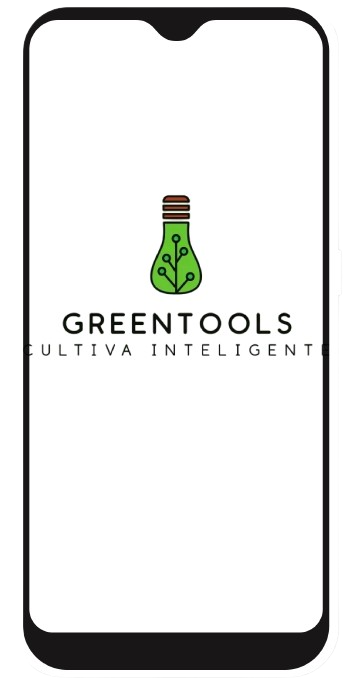

Acerca de GreenTools
GreenTools es una startup dedicada a transformar la agricultura mediante la innovación tecnológica. Desarrollamos soluciones que integran el Internet de las Cosas (IoT) y la automatización para empoderar a agricultores de todo el mundo.